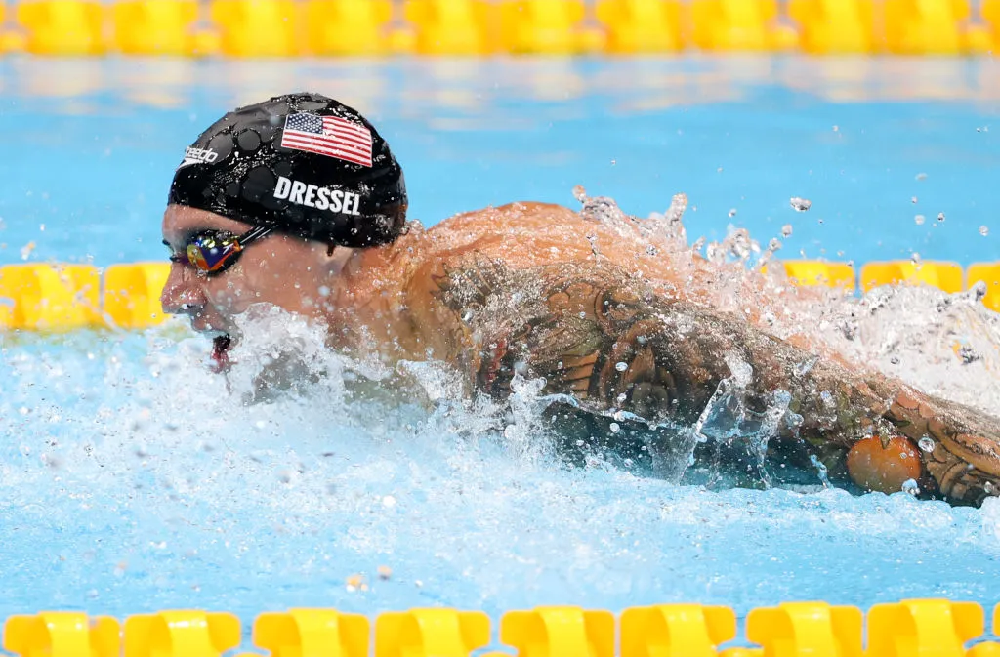

Daewon Kim
Hobbies
There are many things, I enjoy:
- Swimming
- Swimming is my favorite sport, and it's been a significant part of my life. I first started swimming at the age of 7 in Korea and then resumed in Hawaii at age 9. Initially, swimming wasn’t very enjoyable for me until last year when I began to experience the thrill of competition with other swimmers. Currently, I am a member of the Splash Aquatics Swim Club and also swim with the Roosevelt High School swim team. My goal is to achieve my desired times and potentially make it onto a college swim team.
- Golfing
- Golf is the first sport that I enjoyed sharing with my father, starting at age 10. Unlike swimming, I have always had a strong passion for golfing. During my teenage years, I was part of the “First Tee” team from ages 14 to 15, but I had to give it up due to the impact of COVID-19. Despite this setback, my love for the sport remains strong. My goal is to consistently play at a single-digit handicap level.
Description of the images:
- Caeleb Dressel is an exceptional American swimmer and a gold medalist who holds several world records. He has become my favorite swimmer, not only for his achievements but also for his dedication to the sport. One of the reasons I admire him is that we both excel at the butterfly stroke, which creates a personal connection for me. I first discovered him when I began taking a deeper interest in swimming myself. Watching his success motivates me to push my limits in the pool.
- Tiger Woods is a legendary golfer known for his remarkable achievements. He has won the most PGA Tour titles among all living players, solidifying his place in golf history. I first learned about him through my dad, who admires his career. Over time, I became a fan of Tiger Woods because of his incredible skills on the course. His precision and mastery of the game have made him an inspiration to me.
Sample Photos
